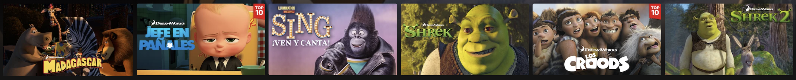

Drama
El género dramático se centra en la representación de conflictos emocionales y personales de los personajes. Estas películas exploran las relaciones humanas, dilemas morales y situaciones emocionales complejas. Los personajes suelen experimentar un desarrollo a lo largo de la trama, y el énfasis está en la profundidad de la narrativa y la interpretación de los actores.

Accion
Las películas de acción se caracterizan por su ritmo rápido y escenas llenas de emoción y movimiento. Suelen presentar héroes enfrentándose a desafíos físicos o enfrentamientos con villanos. La acción es un elemento clave, con escenas de persecuciones, peleas y explosiones que mantienen la atención de la audiencia.
Ciencia Ficcion
El cine de ciencia ficción se enfoca en conceptos futuristas, tecnología avanzada y mundos imaginarios. Estas películas exploran temas como la exploración espacial, la inteligencia artificial, la ciencia avanzada y a menudo plantean preguntas sobre el futuro de la humanidad y la tecnología..

Comedia
Las películas de comedia tienen como objetivo principal hacer reír a la audiencia. Utilizan situaciones cómicas, diálogos humorísticos y, a menudo, exageraciones para crear un ambiente divertido. Los temas pueden variar ampliamente, desde la comedia romántica hasta la comedia de sátira social.
`Terror
El cine de terror busca provocar miedo y suspenso en la audiencia. Esto se logra a través de elementos como monstruos, fenómenos paranormales, situaciones aterradoras o psicológicas. El suspense y la sorpresa son fundamentales para mantener la tensión.
Fantasia
Las películas de fantasía transportan a la audiencia a mundos imaginarios llenos de elementos mágicos, criaturas míticas y aventuras épicas. Suelen involucrar la lucha entre el bien y el mal, y a menudo se basan en mitos, leyendas y la imaginación del autor.
Animacion
El cine de animación utiliza técnicas de animación, como la animación por computadora o la animación tradicional, para contar historias. Puede abarcar una amplia variedad de géneros y temas y no se limita a un público específico. Las películas animadas a menudo ofrecen una gran flexibilidad creativa en la presentación de mundos y personajes.
